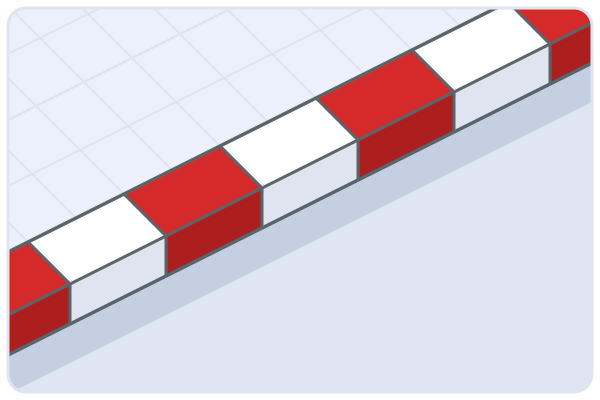
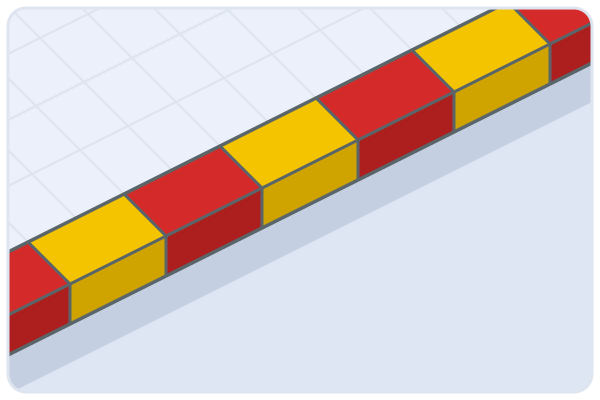
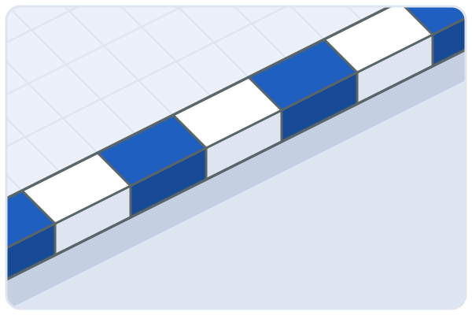
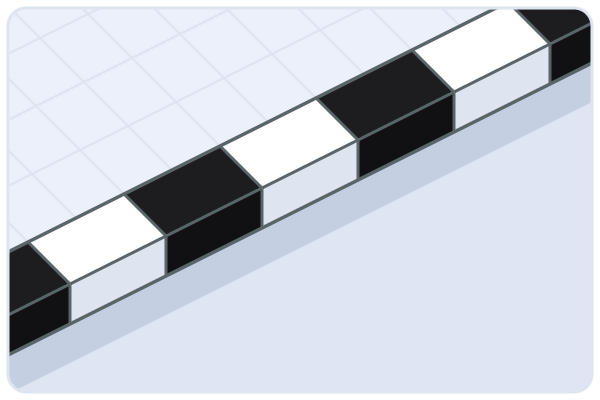
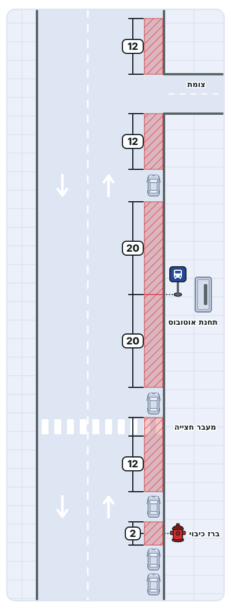
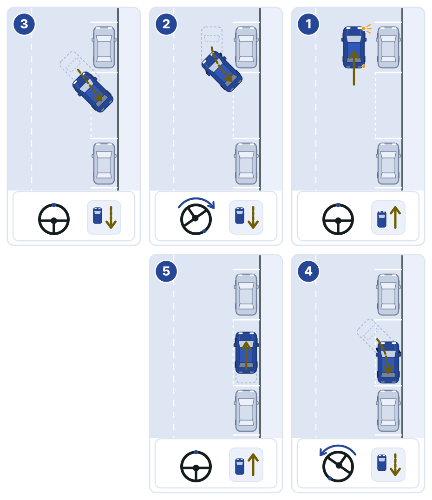
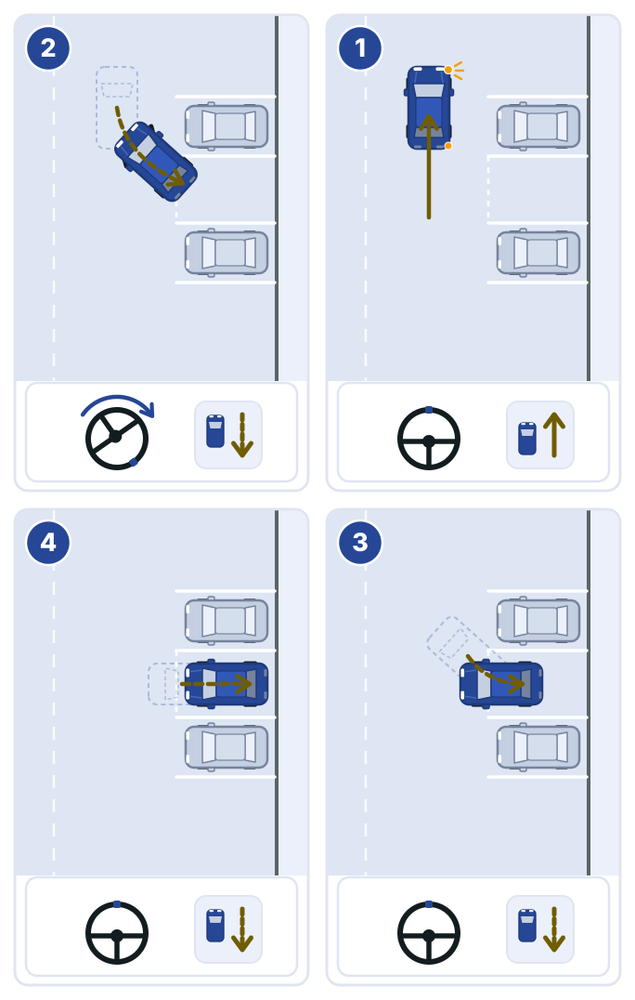
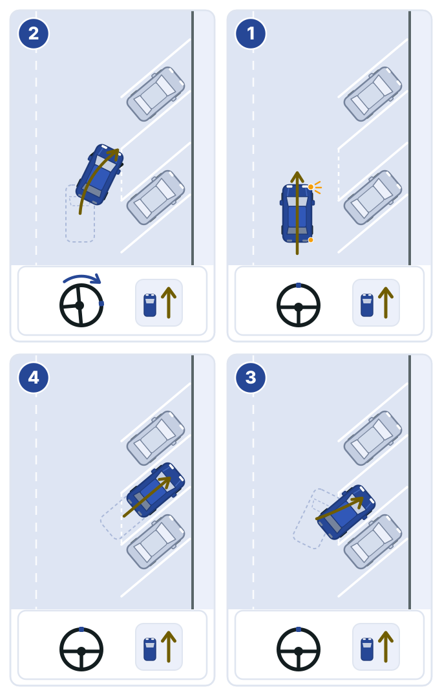

סימוני אבני שפה
הצבע על אבני השפה קובע מה מותר לעשות בכביש שלידן. קוראים את הסימון לפני שמאטים לעצירה, ובודקים גם את התמרור שמוצב במקום.
-

אדום-לבן: אסורה כל עצירה או חנייה בכביש שליד אבני השפה.
-

אדום-צהוב: אסורה עצירה, למעט סוג הרכב שהתמרור במקום מתיר לו לעצור להעלאת נוסעים ולהורדתם, למשל אוטובוס בתחנה.
-

כחול-לבן: החנייה מותרת בתשלום, לפי ההוראות בתמרור שבמקום.
-

שחור-לבן: מבליט מדרכות, מפרדות ואיי תנועה. זה אינו סימון של חנייה.
חנייה היא העמדת רכב לכל זמן שהוא, שלא לשם העלאה או הורדה של אנשים או טעינה או פריקה של מטען מיד וללא הפסקות. בתחנת אוטובוס מותר לחנות רק כשהתמרור בתחנה מתיר זאת, ורק לפי מה שרשום בו.
חזרה לתוכן הענייניםאיפה אסור להעמיד רכב
גם בלי סימון על אבני השפה, רכב עומד יכול להסתיר הולכי רגל, לחסום תחבורה ציבורית או לעכב כוחות הצלה. אסור להעמיד רכב במקומות האלה, אלא אם תמרור או סימון מתירים זאת:
- בתחום 12 מטרים מצומת.
- על מעבר חצייה ובתחום 12 מטרים לפניו. אחרי המעבר מותר, אם אין איסור אחר.
- מ-20 מטרים לפני תמרור של תחנת אוטובוס ועד 20 מטרים אחריו. מול התחנה מותר רק כשרוחב הכביש 12 מטרים לפחות.
- לצד מעקה בטיחות להולכי רגל.
במקומות האלה אסור להעמיד רכב בכל מקרה:
- בתחום שני מטרים מברז כיבוי אש.
- לצד רכב אחר שחונה בצד הדרך, בטור שני.
- על גשר או בתוך מנהרה.
- בדרך מהירה אסור לעצור בכלל, למעט עצירה בשול כשהרכב התקלקל ואי אפשר להמשיך בנסיעה.

העמדת הרכב ויציאה מחנייה
מעמידים את הרכב במקביל לשפת הכביש, או לפי הסימון אם סומן אופן חנייה אחר. חנייה בזווית מותרת רק כשיש על הכביש סימון זוויתי, ולפי הסימון.
- בחנייה במקביל, הגלגלים הקרובים לשפת הכביש נמצאים עד 40 סנטימטרים מהמדרכה.
- לפני שפותחים דלת בודקים שהיציאה מהרכב לא תפריע ולא תסכן רוכב, הולך רגל או רכב חולף.
- ביציאה מחנייה נותנים זכות קדימה לתנועה בדרך, ובודקים במראות ובמבט לאחור גם רוכבים שמגיעים מאחור.
- על רכב שחונה במקום אסור אחראי בעל הרכב הרשום, אלא אם יוכיח שלא הוא נהג ויצביע על מי שנהג.
חנייה במקביל

- עוצרים במקביל לרכב החונה שלפני המקום, במרחק של חצי מטר עד מטר ממנו, כשהפגוש האחורי בקו אחד עם הפגוש האחורי שלו. ההגה ישר, ומאותתים ימינה.
- נוסעים לאחור לאט ומסובבים את ההגה עד הסוף ימינה, עד שהרכב בזווית של כ-45 מעלות למדרכה.
- מיישרים את ההגה וממשיכים לאחור באותה זווית, עד שהפגוש הקדמי עובר את הפגוש האחורי של הרכב שלפנים.
- ממשיכים לאחור ומסובבים את ההגה עד הסוף שמאלה, עד שהרכב מקביל למדרכה.
- מיישרים את ההגה ומתקדמים מעט קדימה, כדי לעמוד באמצע המקום ועד 40 סנטימטרים מהמדרכה.
חנייה בניצב

- עוברים על פני התא בנסיעה קדימה, במרחק של כמטר וחצי מהרכבים החונים, ועוצרים כשהפגוש האחורי עבר את הקו הרחוק של התא. ההגה ישר, ומאותתים ימינה.
- נוסעים לאחור לאט ומסובבים את ההגה עד הסוף ימינה, כך שהחלק האחורי של הרכב נכנס לתא.
- כשהרכב מקביל לקווי התא, מיישרים את ההגה.
- ממשיכים לאחור בקו ישר עד שהרכב כולו בתוך התא, ועוצרים.
חנייה בזווית

- מתקרבים לאט, במרחק של כמטר וחצי מהרכבים החונים. ההגה ישר, ומאותתים ימינה.
- כשחזית הרכב מגיעה לקו הקרוב של התא, מסובבים את ההגה ימינה ונכנסים לאט קדימה.
- כשהרכב מקביל לקווי התא, מיישרים את ההגה.
- ממשיכים קדימה עד שהרכב כולו בתוך התא, ועוצרים.
תרגול בנושא עצירה וחנייה
לשאלון התרגול 15 שאלות בנושא, עם ציון והסברים לתשובות.